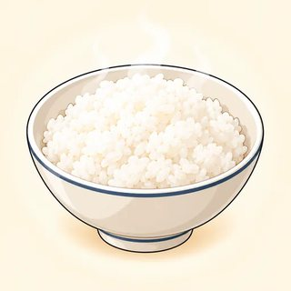
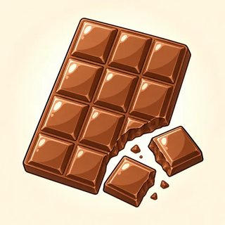
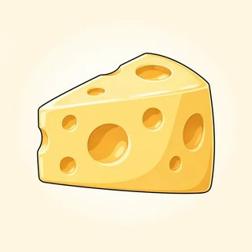
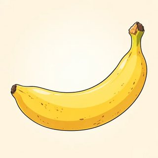
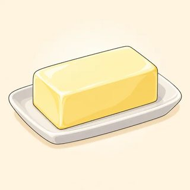
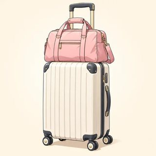
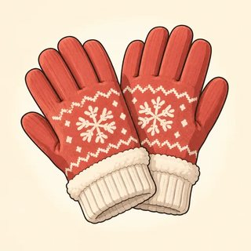
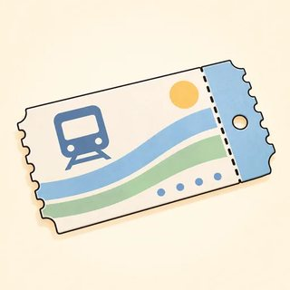
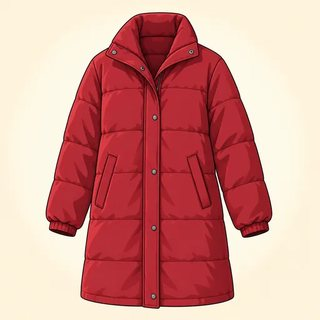
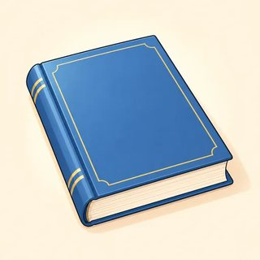

Structures for Fluency — Classroom Materials
Everything to print for Classes C10–C12: picture flashcards, the How It's Made quiz, process strips, the fact-file information gap, mystery close-ups, detective cards, the "Whose bag?" case, rules-or-advice cards, mini-debate cards and talking tokens, story cards, the C12 speaking checklist (feeds C13), the Module 1–4 Review Race board game, and the teacher's listening scripts.
What to Print
| Set | What | How many | Used in |
|---|---|---|---|
| A | Picture flashcards (products, clue objects & modal cards, debate topics) | 1 set for the board | C10, C11, C12 |
| B | How It's Made quiz (16 cards) | 1 set (teacher reads) | C10 (and C13 station) |
| C | Process strips: chocolate & tea | 1 set per pair, cut and mixed | C10 |
| D | Fact-file information gap A/B | 1 page per pair | C10 |
| E | Mystery close-ups (12) | 1 set per group of 3 | C11 |
| F | Detective cards (12 cases) | 1 set per group of 3–4 | C11 |
| G | "Whose bag?" case (4 profiles + 5 clues) | 1 set per group | C11 |
| H | Rules or advice? cards (14) | 1 set per pair | C11 |
| I | Mini debate: topic cards, opinion cards, chair cards, talking tokens | 1 set per group of 4 | C12 |
| J | Story cards (8) | 1–2 sets on a side table | C12 |
| K | C12 speaking checklist: descriptors, class grid, score slips | 1 grid for you · 1 slip per learner | C12 → C13 |
| L | Module 1–4 Review Race (board game) | 1 board per group of 3–4 + a die + counters | C12 warmer, C13 station |
| M | Listening & dictation scripts | Teacher only | C10, C11, C12 |
A · Picture Flashcards — Products & "made…" (4.1)
Hold up a card and elicit a passive sentence: "Coffee is grown in Brazil." The small line under each word is a model. The word-only cards (made in / of / from / by) go on the board for the preposition contrast.











A · Flashcards — Clues & Modal Cards (4.2)
Clue cards: show one and ask "So…?" Learners make the deduction. Put the modal cards on the board as the certainty scale (✅ → 🤔 → ❌) and the rules family underneath. Literacy-support learners can use the symbols only.








A · Flashcards — Debate Topics (4.3)
Put the topic pictures on the board during the mini-debate prep so groups can see the choices. They also work as story prompts.


B · How It's Made Quiz — Inventions & Processes (4.1)
- Teams of 3–4. The teacher reads a card and the three answers, twice.
- Teams talk for 30 seconds, in English.
- This round's speaker says the answer as a full passive sentence: "Paper was invented in China." The speaker changes every round.
- 1 point for the right fact · +1 point for a correct passive sentence (right be + past participle).
- After each answer the teacher reads the extra fact (small gray line); a learner repeats it.
- Last round: each team writes one question for the others: "Where is ___ grown?" "When was ___ built?" (any place or product).
Answers: 1 B · 2 A · 3 B · 4 B · 5 A · 6 B · 7 A · 8 A · 9 B · 10 A · 11 B · 12 A · 13 A · 14 B · 15 A · 16 A. Full sentences are in the answer key.
C · Process Strips — How It's Made (4.1)
The strips are printed in the correct order (this is your key). Cut them, mix them, and put them in an envelope, one set per pair. Pairs put the steps in order, then take turns saying them with First… Then… After that… Finally…, without reading if they can. Stretch: add one relative clause ("The beans are roasted, which gives them their color.").
C1 · How chocolate is made (8 strips)
C2 · How tea is made (6 strips)
D · Fact-File Information Gap (4.1)
One page per pair; cut A from B. Both places are invented, so nobody can "know" the answers. A asks about Sunrise Chocolate; B asks about the Riverside Bridge. Use passive questions. Don't show your card.
You know: The Riverside Bridge
| built | in 1932 |
|---|---|
| designed by | Maria Kowalski, a young engineer |
| made of | steel and stone |
| painted | green, every ten years |
| crossed by | 20,000 cars every day |
| closed | in 2019, for repairs |
Ask B: Sunrise Chocolate
| When / the company / found? | |
|---|---|
| Who / it / start by? | |
| Where / the beans / grow? | |
| How / the chocolate / make? | |
| Where / it / sell? | |
| Where / it / export to? |
You know: Sunrise Chocolate
| founded | in 1998 |
|---|---|
| started by | two sisters |
| beans grown | in Ghana |
| chocolate made | by hand |
| sold | in 30 stores |
| exported to | Canada and Mexico |
Ask A: The Riverside Bridge
| When / it / build? | |
|---|---|
| Who / it / design by? | |
| What / it / make of? | |
| How often / it / paint? | |
| How many cars / cross it / every day? | |
| When / it / close? |
Model questions: When was the company founded? · Who was it started by? · Where are the beans grown? · How is the chocolate made? · Where is it sold? · Where is it exported to? · When was the bridge built? · Who was it designed by? · What is it made of? · How often is it painted? · How many cars cross it every day? · When was it closed?
E · Mystery Close-Ups (4.2)
Each card shows a very close part of a picture. Fold the answer line under before class (or cut it off and keep it). The holder shows the picture; the others deduce with all three levels: "It might be a lamp… It can't be food, it's shiny… It must be a key!" The holder says "Warmer!" or "Colder!" and reveals. Show the matching flashcard from Set A or the full picture to reveal. Check the prints before class: if a close-up is too easy or too hard, give a clue ("You use it every day").


F · Detective Cards — 12 Cases (4.2)
Groups of 3–4, cards face down. A player reads a case aloud. Each other player makes one deduction at a different level (must · might · can't) and says the clue: "There are three newspapers at the door, so they can't be home." The reader adds one piece of advice: "We should…". Rule: deductions are about the card people, never about people in the room.
G · "Whose Bag?" — a Detective Case (4.2)
A bag was found on the bus. Put the four owner cards face up. Put the five clue cards face down in order. Turn over one clue at a time. After each clue, every player makes one deduction about one person: "It can't be Grace's, because…" After clue 5, the group writes: "It must be ___'s bag, because…" The best reasons win, not the fastest group.
Mei
A nurse. She's flying to Toronto on Friday to visit her sister. She loves cooking.
Omar
A chef. He never travels in winter. He doesn't have a passport yet.
Grace
A student. She's going to Miami for a beach vacation next week.
Luis
A bus driver. He's visiting Toronto next month, but he hates flying.

H · Rules or Advice? (4.2)
One set per pair. Make four columns on the desk: have to / must · don't have to · mustn't / can't · should. Take a card, say the sentence ("At the pool, you mustn't run."), and put it in a column. Two cards can go in two columns if you can explain why. The key is in the answer key.
I · Mini Debate — Topics, Opinion Cards, Chair Cards, Tokens (4.3)
One topic per group of 4. Deal the four opinion cards face down: learners argue the card's opinion, not their own (they may swap inside the group). One learner also takes the chair card. Topics avoid politics, religion and immigration on purpose; please keep it that way if you add your own.
Public transportation should be free for everyone.
Useful: If we…, … would… · The main reason is… · For example, …
Phones should be turned off during English class.
Useful: If we…, … would… · The main reason is… · For example, …
Everyone should learn to cook at school.
Useful: If we…, … would… · The main reason is… · For example, …
Life in a city is better than life in the country.
Useful: If we…, … would… · The main reason is… · For example, …
Working from home is better than working in an office.
Useful: If we…, … would… · The main reason is… · For example, …
Social media does more harm than good.
Useful: If we…, … would… · The main reason is… · For example, …
Fast food should cost more.
Useful: If we…, … would… · The main reason is… · For example, …
It's better to learn a language in a class than online.
Useful: If we…, … would… · The main reason is… · For example, …
Tourists are good for a city.
Useful: If we…, … would… · The main reason is… · For example, …
Children should get money for helping at home.
Useful: If we…, … would… · The main reason is… · For example, …
Opinion cards (one set of 4 per group)
🎙️ You are the chair (you speak too)
- Open: "Today's question is… Let's start with you, ___."
- Round 1: 1 minute each, in order. Use a phone timer.
- Round 2: "Who agrees? … What do you think, ___?"
- A long turn? "Thanks! Let's hear from someone else."
- Round 3: sum up: "Most of us think… but ___ thinks…"
🎙️ You are the chair (you speak too)
- Open: "Today's question is… Let's start with you, ___."
- Round 1: 1 minute each, in order. Use a phone timer.
- Round 2: "Who agrees? … What do you think, ___?"
- A long turn? "Thanks! Let's hear from someone else."
- Round 3: sum up: "Most of us think… but ___ thinks…"
Talking tokens (3 per learner; coins or paper clips also work)
Put one token in the middle every time you speak in round 2. No tokens left? Listen until everyone has used theirs; then everyone takes 3 again.
J · Story Cards (4.3)
Keep these on a side table. Any learner can take one instead of telling a true story, with no reason needed. Learners can change any detail. Say out loud: "True, changed, or invented: all are great." A small, light story is a good story.
The day I got lost
You were in a new place. Your phone was dead. Someone helped you.
Try: used to · who / which · She told me that… · It must be… · was given / was found · I've… since then · If I…, I'd… / I wish…
A job I used to have
What did you use to do every day? What happened one day?
Try: used to · who / which · She told me that… · It must be… · was given / was found · I've… since then · If I…, I'd… / I wish…
A surprising phone call
Who called? What did they tell you? How did you feel?
Try: used to · who / which · She told me that… · It must be… · was given / was found · I've… since then · If I…, I'd… / I wish…
The lost bag
You found something on a bus. What was inside? What did you do?
Try: used to · who / which · She told me that… · It must be… · was given / was found · I've… since then · If I…, I'd… / I wish…
A cooking disaster
You cooked for friends. Something went wrong! What did they say?
Try: used to · who / which · She told me that… · It must be… · was given / was found · I've… since then · If I…, I'd… / I wish…
A kind stranger
Someone helped you. Who were they? What did they say?
Try: used to · who / which · She told me that… · It must be… · was given / was found · I've… since then · If I…, I'd… / I wish…
The best day of the year
A small, happy day. What happened? Why was it special?
Try: used to · who / which · She told me that… · It must be… · was given / was found · I've… since then · If I…, I'd… / I wish…
A mistake I learned from
A small mistake, a big lesson. What would you do now?
Try: used to · who / which · She told me that… · It must be… · was given / was found · I've… since then · If I…, I'd… / I wish…
K · C12 Speaking Checklist — Opinions & Storytelling (feeds C13)
Score each learner's whole performance across the mini debate and the story: five criteria, 0–3 points each, total /15. 0 = no response · 1 = not yet B1 · 2 = B1 · 3 = strong B1. Score what a patient listener understands, not an accent. Tick M1–M4 when you hear a structure from that module used correctly. Write one sentence you heard in the notes column; it makes the slip easy to write.
| Criterion | 3 | 2 | 1 | 0 |
|---|---|---|---|---|
| 1 · Task | Debate: clear opinion + 2 reasons + an example. Story: beginning, middle, end; easy to follow | Opinion + 1 reason; story mostly connected | Opinion with no reason; story is a list of events | No opinion or story yet |
| 2 · Range (Modules 1–4) | Structures from 3–4 modules, used without prompting | Structures from 2 modules | 1 module; mostly A2 grammar | Single words, phrases |
| 3 · Accuracy | Few errors; none block meaning; tenses controlled | Some errors, meaning clear; a few tense slips | Frequent errors; the listener must work hard | Meaning often lost |
| 4 · Interaction & opinion language | Varied openers; acknowledges before disagreeing; responds to others, invites others | 2 phrases; responds when asked | "I think" only; blunt or no response | No interaction |
| 5 · Fluency & pronunciation | Keeps going with natural pauses; clear stress and chunks | Some long pauses; mostly clear | Many pauses; hard to follow | Can't continue without help |
| Tick | What counts (correct use) |
|---|---|
| M1 | present perfect vs past simple · present perfect continuous (I've been…ing) · used to / would |
| M2 | first / second conditional (If we banned…, …would…) · I wish… |
| M3 | reported speech (She told me that…, He asked me if…) · relative clauses (who / which / where, …, which is why…) |
| M4 | present / past passive · must / might / can't deduction · have to / don't have to / should |
Copy each learner's total and module ticks to the class register. In C13, send each learner to the catch-up station for any module with no tick, or for their lowest criterion: no M1 → tenses station (present perfect vs past simple, used to) · no M2 → conditionals and wish station · no M3 → reported speech and relative clauses station · no M4 → passive and modals station (Sets B, E, F of this pack) · criterion 4 ≤ 1 → opinion-language station (Workbook 4.3 Ex 1, 4, 5) · criterion 5 ≤ 1 → the Review Race board (Set L) with a partner. If Progress Test 1 has its own speaking task, keep this grid anyway: it is your evidence of extended speaking for Modules 1–4. Learners you didn't hear in C12 tell their story (live or recorded) during the C13 catch-up time.
Class grid
| Name | 1 Task | 2 Range | 3 Accur. | 4 Inter. | 5 Fluency | /15 | M1 | M2 | M3 | M4 | C13 station | Notes (a sentence I heard) |
|---|---|---|---|---|---|---|---|---|---|---|---|---|
| ☐ | ☐ | ☐ | ☐ | |||||||||
| ☐ | ☐ | ☐ | ☐ | |||||||||
| ☐ | ☐ | ☐ | ☐ | |||||||||
| ☐ | ☐ | ☐ | ☐ | |||||||||
| ☐ | ☐ | ☐ | ☐ | |||||||||
| ☐ | ☐ | ☐ | ☐ | |||||||||
| ☐ | ☐ | ☐ | ☐ | |||||||||
| ☐ | ☐ | ☐ | ☐ | |||||||||
| ☐ | ☐ | ☐ | ☐ | |||||||||
| ☐ | ☐ | ☐ | ☐ | |||||||||
| ☐ | ☐ | ☐ | ☐ | |||||||||
| ☐ | ☐ | ☐ | ☐ | |||||||||
| ☐ | ☐ | ☐ | ☐ | |||||||||
| ☐ | ☐ | ☐ | ☐ | |||||||||
| ☐ | ☐ | ☐ | ☐ | |||||||||
| ☐ | ☐ | ☐ | ☐ |
Learner score slips (cut; give one to each learner in C13)
My B1 Speaking Check (C12) · Name: ______________
Task ☐ · Range ☐ · Accuracy ☐ · Interaction ☐ · Fluency ☐ Total: ____ /15
Grammar I used: M1 ☐ · M2 ☐ · M3 ☐ · M4 ☐
⭐ Well done: ___________________________
➡️ My next step: ________________________
My B1 Speaking Check (C12) · Name: ______________
Task ☐ · Range ☐ · Accuracy ☐ · Interaction ☐ · Fluency ☐ Total: ____ /15
Grammar I used: M1 ☐ · M2 ☐ · M3 ☐ · M4 ☐
⭐ Well done: ___________________________
➡️ My next step: ________________________
My B1 Speaking Check (C12) · Name: ______________
Task ☐ · Range ☐ · Accuracy ☐ · Interaction ☐ · Fluency ☐ Total: ____ /15
Grammar I used: M1 ☐ · M2 ☐ · M3 ☐ · M4 ☐
⭐ Well done: ___________________________
➡️ My next step: ________________________
My B1 Speaking Check (C12) · Name: ______________
Task ☐ · Range ☐ · Accuracy ☐ · Interaction ☐ · Fluency ☐ Total: ____ /15
Grammar I used: M1 ☐ · M2 ☐ · M3 ☐ · M4 ☐
⭐ Well done: ___________________________
➡️ My next step: ________________________
My B1 Speaking Check (C12) · Name: ______________
Task ☐ · Range ☐ · Accuracy ☐ · Interaction ☐ · Fluency ☐ Total: ____ /15
Grammar I used: M1 ☐ · M2 ☐ · M3 ☐ · M4 ☐
⭐ Well done: ___________________________
➡️ My next step: ________________________
My B1 Speaking Check (C12) · Name: ______________
Task ☐ · Range ☐ · Accuracy ☐ · Interaction ☐ · Fluency ☐ Total: ____ /15
Grammar I used: M1 ☐ · M2 ☐ · M3 ☐ · M4 ☐
⭐ Well done: ___________________________
➡️ My next step: ________________________
Write the "Well done" in the learner's own words from your notes ("You said: If I found a bag again, I'd do the same. Great second conditional!"). Keep the "next step" to one small, doable thing ("Before you disagree, say I see what you mean, but…").
L · Game — Module 1–4 Review Race (C12 warmer · C13 station)
- Groups of 3–4, one board, one die, a counter for each player (a coin, an eraser). Start on square 1.
- Roll and move. Follow the path: 1–6 left to right, 7–12 right to left, and so on (follow the numbers).
- Answer the square in a full sentence. The group says "Good!" or helps you fix it. If the group helps, stay on the square this time.
- Personal squares: answer about you, a friend, a card person, or invent. Anyone can say "Pass!" and move back 1.
- First to FINISH, or the player nearest to it when the teacher stops the game, wins.
Teacher: while groups play, note which squares cause trouble. Squares 2–4, 18, 21, 25 = Module 1 · 6–8, 22 = Module 2 · 9–11, 19, 26 = Module 3 · 12–13, 15–17, 27–28 = Module 4 · 23–24 = opinion language (4.3). Early evidence for the C13 stations.
M · Listening & Dictation Scripts (teacher reads aloud)
Read at a natural but slow speed, with pauses. Read each script twice: once for the main idea, once to check. Use weak forms and contractions (it's made, it was built /wəz/, she must be), because that is what learners hear outside class. For dialogues, change your voice or ask a confident learner to read one part. The 🔊 buttons in the online lessons give learners extra listening at home.
4.1-A · How coffee is made (Workbook 4.1, Ex 1a: number the steps)
Answers: 1 picked · 2 skins removed · 3 dried · 4 roasted · 5 ground · 6 packed and sold (workbook order: 4 · 1 · 6 · 3 · 2 · 5).
4.1-B · News in brief (Workbook 4.1, Ex 1b: write the six passive verbs)
Answers: was opened · was designed · were given · was stolen · was found · was hurt. Then ask: "Who stole the truck?" (We don't know: that's why it's passive.) "Who found it?" (Probably the police: obvious.)
4.2-A · Where's Sam? (Workbook 4.2, Ex 1: the clue and the modal)
Answers: stuck in traffic: he rides his bike → can't · still asleep: not like him, maybe the alarm → might · sick: he looked pale → may · on his way: the message "Leaving now!" → must. Follow-up: "What made Rosa sure at the end?" (New evidence.)
4.2-B · Dictation (C11 end or C12 warmer; read each sentence 3 times)
Then ask: "Which ones are guesses? (1, 2) Which one is a choice? (3) Which one is advice? (4)"
4.3-A · Is social media good for us? (Workbook 4.3, Ex 2: check the phrases)
Heard: If you ask me · I'm not sure I agree · the main reason is · For example · I see what you mean, but · on the other hand · That's a good point · Exactly · It seems to me that · I take your point. Not heard: In my opinion · I couldn't agree more. Maya changes her mind a little ("Maybe it depends…").
4.3-B · The bag on the train: the model story (Workbook 4.3, Ex 3a: find the structures)
Structures: used to take · a woman who was sitting / a notebook, which had · She told me that she was… · She must be really worried · it was picked up / a card was delivered · I've taken… since then / I've never found · If I found…, I'd do… · I wish more stories were… Use it again on slide 17: one sentence per step of the story road.